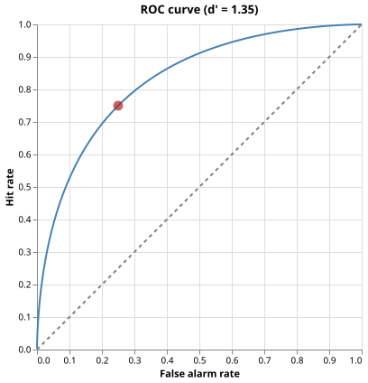

Signal Detection Theory Analysis
The Problem
- In a detection experiment, an observer responds "yes" or "no" to each stimulus
- Some stimuli contain a signal, others do not
- Raw accuracy conflates two separate factors
- The observer's ability to detect the signal
- Their tendency to say "yes" regardless
- Framing the outcome as a confusion matrix keeps the two factors separate
| Observer says "yes" | Observer says "no" | |
|---|---|---|
| Signal present | Hit | Miss |
| Signal absent | False alarm | Correct rejection |
- The hit rate (HR) is
the proportion of signal trials on which the observer responds "yes"
- I.e, hits divided by total signal trials
- The false alarm rate (FAR) is
the proportion of noise trials on which the observer incorrectly responds "yes"
- False alarms divided by total noise trials
An observer runs 100 signal trials and 100 noise trials. They record 70 hits and 30 false alarms. What are their hit rate and false alarm rate?
- HR = 0.70, FAR = 0.30
- Correct: HR = 70/100 = 0.70 and FAR = 30/100 = 0.30.
- HR = 0.70, FAR = 0.70
- Wrong: the false alarm count (30) is divided by the number of noise trials (100), giving 0.30, not 0.70.
- HR = 70, FAR = 30
- Wrong: hit rate and false alarm rate are proportions between 0 and 1, not raw counts.
- HR = 0.30, FAR = 0.70
- Wrong: hits and false alarms have been swapped; hits come from signal trials and false alarms come from noise trials.
Computing Hit Rate and False Alarm Rate
def confusion_rates(labels, decisions):
"""Return (hit_rate, false_alarm_rate) from binary label and decision arrays.
labels -- 1-D array of 1 (signal) or 0 (noise) for each trial
decisions -- 1-D array of 1 (responded yes) or 0 (responded no)
hit_rate = hits / total signal trials
false_alarm_rate = false alarms / total noise trials
"""
labels = np.asarray(labels)
decisions = np.asarray(decisions)
signal_trials = labels == 1
noise_trials = labels == 0
hits = np.sum((decisions == 1) & signal_trials)
false_alarms = np.sum((decisions == 1) & noise_trials)
hit_rate = hits / np.sum(signal_trials)
false_alarm_rate = false_alarms / np.sum(noise_trials)
return float(hit_rate), float(false_alarm_rate)
labelsis an array of 1 (signal) and 0 (noise) for each trial.decisionsis an array of 1 (responded yes) and 0 (responded no).- The function counts hits and false alarms then divides by the appropriate total number of trials
Order the steps to compute the hit rate from experiment data.
Count the number of trials on which a signal was present. Count the number of those signal trials on which the observer responded "yes" (hits). Divide the hit count by the total number of signal trials.
The ROC Curve as a Threshold Sweep
- An observer does not simply say "yes" or "no"
- They have an internal numeric evidence score for each trial and say "yes" when that score exceeds a decision threshold
- By varying the threshold, we trace out different (FAR, HR) pairs
- A very high threshold means only very strong evidence triggers a "yes"
- Few false alarms, but also few hits
- A conservative observer
- A very low threshold means almost any evidence triggers a "yes"
- Many hits, but also many false alarms
- A liberal observer
- A very high threshold means only very strong evidence triggers a "yes"
- The ROC curve (Receiver Operating Characteristic) is the set of all (FAR, HR) pairs an observer can achieve by adjusting the threshold
- The diagonal line FAR = HR represents chance performance
- I.e., the observer gains no extra hits without an equal increase in false alarms
- A curve that bows toward the upper-left corner means that the observer can achieve high hit rates with low false alarm rates, i.e., better discrimination
def roc_curve(scores, labels):
"""Return (far, hr) arrays tracing the ROC curve from evidence scores.
scores -- 1-D array of numeric evidence values, one per trial
labels -- 1-D array of 1 (signal) or 0 (noise) for each trial
The threshold sweeps over all unique score values plus a value just
above the maximum so that the curve starts near (0, 0). At each
threshold, a trial is classified as "yes" when its score is >= threshold.
The curve runs from near (0, 0) at the highest threshold to (1, 1) at
the lowest, tracing all (FAR, HR) pairs the observer can achieve.
"""
scores = np.asarray(scores, dtype=float)
labels = np.asarray(labels)
# Thresholds: from just above max down to min, covering the full range.
thresholds = np.sort(np.unique(scores))[::-1]
# Prepend a threshold above every score so the curve starts at (0, 0).
top = np.array([thresholds[0] + 1.0])
thresholds = np.concatenate([top, thresholds])
n_signal = np.sum(labels == 1)
n_noise = np.sum(labels == 0)
far = np.empty(len(thresholds))
hr = np.empty(len(thresholds))
for i, t in enumerate(thresholds):
decisions = (scores >= t).astype(int)
hits = np.sum((decisions == 1) & (labels == 1))
fa = np.sum((decisions == 1) & (labels == 0))
hr[i] = hits / n_signal
far[i] = fa / n_noise
return far, hr
scorescontains the numeric evidence value for each triallabelscontains 1 for signal trials and 0 for noise trials- The function sweeps over all unique score values as candidate thresholds from highest (most conservative) to lowest (most liberal)
- At each threshold, a trial is classified as "yes" when its score is at or above the threshold
Match each threshold choice to its likely effect on hit rate and false alarm rate.
- Very high threshold
- Low hit rate and low false alarm rate (conservative: the observer rarely responds).
- Very low threshold
- High hit rate and high false alarm rate (liberal: the observer almost always responds).
- Threshold at the midpoint of all scores
- Intermediate hit rate and false alarm rate (moderate operating point).
Area Under the ROC Curve
- Any single (FAR, HR) pair depends on the threshold chosen, which may vary between observers or experiments
- The area under the ROC curve (AUC) summarizes performance across all thresholds with a single number
- AUC = 0.5: the ROC is the diagonal, i.e., chance performance
- AUC = 1.0: the ROC passes through (0, 1), i.e., perfect discrimination
- Interpretation: AUC equals the probability that a randomly chosen signal trial receives a higher evidence score than a randomly chosen noise trial
- The trapezoidal rule approximates AUC from the arrays of (FAR, HR) points:
$$\text{AUC} \approx \sum_i \tfrac{1}{2}(\text{HR}_i + \text{HR}_{i+1}) \cdot |\text{FAR}_i - \text{FAR}_{i+1}|$$
- Each term is the area of a trapezoid whose parallel sides are $\text{HR}i$ and $\text{HR}$ and whose width is the step in FAR
- As the number of threshold steps increases, the sum converges to the true area
def auc(far, hr):
"""Return the area under the ROC curve using the trapezoidal rule.
The trapezoidal rule approximates the area as a sum of trapezoids:
AUC = sum_i 0.5 * (HR_i + HR_{i+1}) * |FAR_i - FAR_{i+1}|
This is a Riemann sum that converges to the true AUC as the number
of threshold steps increases. AUC = 0.5 for chance performance
(the diagonal) and AUC = 1.0 for perfect discrimination.
"""
far = np.asarray(far, dtype=float)
hr = np.asarray(hr, dtype=float)
# Sort by FAR so the trapezoidal sum goes left to right.
order = np.argsort(far)
sorted_far = far[order]
sorted_hr = hr[order]
widths = np.abs(np.diff(sorted_far))
heights = 0.5 * (sorted_hr[:-1] + sorted_hr[1:])
return float(np.sum(widths * heights))
Visualizing the ROC Curve
def plot_roc(roc_far, roc_hr, filename):
"""Save an ROC curve plot as an SVG file."""
curve_data = [{"far": float(f), "hr": float(h)} for f, h in zip(roc_far, roc_hr)]
diag_data = [{"far": 0.0, "hr": 0.0}, {"far": 1.0, "hr": 1.0}]
base = alt.Chart().encode(
x=alt.X("far:Q", title="False alarm rate", scale=alt.Scale(domain=[0, 1])),
y=alt.Y("hr:Q", title="Hit rate", scale=alt.Scale(domain=[0, 1])),
)
curve = base.mark_line(color="steelblue", strokeWidth=2).properties(
data=alt.Data(values=curve_data)
)
diagonal = base.mark_line(strokeDash=[4, 4], color="gray").properties(
data=alt.Data(values=diag_data)
)
chart = (curve + diagonal).properties(
title="ROC curve (threshold sweep)",
width=360,
height=360,
)
chart.save(filename)

Testing
-
Hit rate is 1.0 when all signal trials are detected
- If the observer responds "yes" to every signal trial, hits equal total signal trials, so HR = 1.0
-
False alarm rate is 0.0 when no noise trial triggers a response
- If the observer never responds "yes" on noise trials, false alarms = 0, so FAR = 0.0
-
Rates are proportional to counts
- With 3 hits out of 4 signal trials and 1 false alarm out of 2 noise trials, HR = 0.75 and FAR = 0.5
-
ROC starts at the origin
- At the threshold above every score, no trial is classified as "yes", so HR = 0 and FAR = 0
-
ROC ends at (1, 1)
- At the threshold below every score, every trial is classified as "yes", so HR = 1 and FAR = 1
-
ROC is monotonically increasing
- Lowering the threshold can only keep or increase both HR and FAR, never decrease either
-
ROC passes through (0, 1) for perfectly separable scores
- When every signal score exceeds every noise score, one threshold admits all signals and no noise, placing a point at FAR = 0, HR = 1
-
AUC of the diagonal is 0.5
- The diagonal ROC (FAR = HR) represents chance performance, so its area is exactly half the unit square
-
AUC of a perfect step is 1.0
- A step from (0, 0) to (0, 1) to (1, 1) encloses the entire unit square
-
AUC is above 0.5 for separable scores
- When signal scores are on average higher than noise scores, the ROC bows above the diagonal and AUC > 0.5
-
AUC does not depend on the order of FAR values supplied
- The implementation sorts FAR internally, so reversing the input arrays gives the same result
import numpy as np
import pytest
from sdt import confusion_rates, roc_curve, auc
# ---------------------------------------------------------------------------
# confusion_rates
# ---------------------------------------------------------------------------
def test_hit_rate_all_hits():
# Every signal trial is detected: hit rate must be 1.0.
labels = [1, 1, 1, 0, 0]
decisions = [1, 1, 1, 0, 0]
hr, far = confusion_rates(labels, decisions)
assert hr == pytest.approx(1.0)
def test_false_alarm_rate_zero():
# No noise trial triggers a false alarm: FAR must be 0.0.
labels = [1, 0, 0, 0]
decisions = [1, 0, 0, 0]
_, far = confusion_rates(labels, decisions)
assert far == pytest.approx(0.0)
def test_hit_and_false_alarm_rates_proportional():
# 3 out of 4 signal trials are hits; 1 out of 2 noise trials is a false alarm.
labels = [1, 1, 1, 1, 0, 0]
decisions = [1, 1, 1, 0, 1, 0]
hr, far = confusion_rates(labels, decisions)
assert hr == pytest.approx(0.75)
assert far == pytest.approx(0.5)
# ---------------------------------------------------------------------------
# roc_curve
# ---------------------------------------------------------------------------
def test_roc_starts_at_origin():
# The first point (highest threshold) should classify nothing as signal,
# so both FAR and HR are 0.
scores = [0.1, 0.5, 0.9, 0.2, 0.8]
labels = [1, 1, 1, 0, 0 ]
far, hr = roc_curve(scores, labels)
assert far[0] == pytest.approx(0.0)
assert hr[0] == pytest.approx(0.0)
def test_roc_ends_at_one():
# The last point (lowest threshold) classifies everything as signal,
# so both FAR and HR are 1.
scores = [0.1, 0.5, 0.9, 0.2, 0.8]
labels = [1, 1, 1, 0, 0 ]
far, hr = roc_curve(scores, labels)
assert far[-1] == pytest.approx(1.0)
assert hr[-1] == pytest.approx(1.0)
def test_roc_monotonically_increasing():
# Both FAR and HR must be non-decreasing across threshold steps.
rng = np.random.default_rng(7493418)
scores = np.concatenate([rng.standard_normal(50), rng.standard_normal(50) + 1.5])
labels = np.concatenate([np.zeros(50, dtype=int), np.ones(50, dtype=int)])
far, hr = roc_curve(scores, labels)
assert all(far[i] <= far[i + 1] for i in range(len(far) - 1))
assert all(hr[i] <= hr[i + 1] for i in range(len(hr) - 1))
def test_roc_perfect_scores():
# When every signal score exceeds every noise score the ROC passes
# through (0, 1): at the threshold that admits all signals but no noise,
# FAR = 0 and HR = 1.
scores = [2.0, 3.0, 4.0, 0.5, 1.0]
labels = [1, 1, 1, 0, 0 ]
far, hr = roc_curve(scores, labels)
# The point (FAR=0, HR=1) must appear somewhere in the curve.
assert any(f == pytest.approx(0.0) and h == pytest.approx(1.0) for f, h in zip(far, hr))
# ---------------------------------------------------------------------------
# auc
# ---------------------------------------------------------------------------
def test_auc_chance_diagonal():
# The diagonal ROC (FAR = HR everywhere) has AUC = 0.5.
far = np.linspace(0, 1, 101)
hr = np.linspace(0, 1, 101)
assert auc(far, hr) == pytest.approx(0.5, abs=1e-6)
def test_auc_perfect():
# A step from (0, 0) to (0, 1) to (1, 1) encloses the full unit square: AUC = 1.0.
far = np.array([0.0, 0.0, 1.0])
hr = np.array([0.0, 1.0, 1.0])
assert auc(far, hr) == pytest.approx(1.0, abs=1e-6)
def test_auc_above_chance_for_separable_scores():
# When signal scores are generally higher than noise scores, AUC > 0.5.
rng = np.random.default_rng(7493418)
noise = rng.standard_normal(200)
signal = rng.standard_normal(200) + 1.5
scores = np.concatenate([noise, signal])
labels = np.concatenate([np.zeros(200, dtype=int), np.ones(200, dtype=int)])
far, hr = roc_curve(scores, labels)
area = auc(far, hr)
assert area > 0.5
def test_auc_symmetric():
# auc should not depend on whether FAR is supplied in ascending or
# descending order, because the implementation sorts internally.
far = np.array([0.0, 0.25, 0.5, 0.75, 1.0])
hr = np.array([0.0, 0.6, 0.8, 0.9, 1.0])
assert auc(far, hr) == pytest.approx(auc(far[::-1], hr[::-1]), abs=1e-10)
Signal detection key terms
- Hit rate
- The proportion of signal trials on which the observer correctly responds "yes": HR = hits / total signal trials; also called the true positive rate.
- False alarm rate
- The proportion of noise trials on which the observer incorrectly responds "yes": FAR = false alarms / total noise trials; also called the false positive rate.
- ROC curve
- The Receiver Operating Characteristic curve; a plot of hit rate against false-alarm rate as the decision threshold varies from very conservative to very liberal; produced by a threshold sweep over evidence scores.
- Area under the curve (AUC)
- A summary of ROC performance computed using the trapezoidal rule; AUC = 0.5 for chance performance and AUC = 1.0 for perfect discrimination; equals the probability that a random signal trial receives a higher evidence score than a random noise trial.
Note on the Gaussian Model
- The equal-variance Gaussian model summarizes performance compactly via $d' = \Phi^{-1}(\text{HR}) - \Phi^{-1}(\text{FAR})$, where $\Phi^{-1}$ is the inverse of the standard normal CDF
- This assumes both the noise distribution and the signal distribution are normal with equal variance
- Only their means differ
- The threshold-sweep ROC presented in this lesson makes no distributional assumptions
- It works for any numeric evidence score and any underlying distribution
Exercises
Do the math
An observer's evidence scores are identical for signal and noise trials, so their ROC curve follows the diagonal exactly. What is their AUC?
Compute AUC from a small example
Given evidence scores [0.1, 0.4, 0.35, 0.8] and labels [0, 0, 1, 1]
(0 = noise, 1 = signal), trace through roc_curve by hand at each unique
score threshold.
Compute the AUC using the trapezoidal rule.
Check your answer against the function.
Effect of threshold on the confusion matrix
Using the synthetic data from generate_sdt.py, choose three thresholds:
the 25th, 50th, and 75th percentile of all scores.
For each threshold, compute HR and FAR and mark the corresponding point on
the ROC curve.
How does moving from a conservative threshold to a liberal threshold change
the confusion matrix?
Comparing two observers
Observer A has evidence scores that follow N(0, 1) for noise and N(1.0, 1) for signal. Observer B has scores that follow N(0, 1) for noise and N(2.0, 1) for signal. Generate 200 trials for each observer (RNG seed 7493418), compute their ROC curves and AUCs, and plot both curves on the same axes. Which observer has the higher AUC and why?
Trapezoidal approximation error
The trapezoidal rule is exact only when the curve is piecewise linear. Generate a fine-grained ROC (1 000 signal and 1 000 noise trials) and a coarse-grained ROC (20 signal and 20 noise trials) from the same underlying score distributions. Compare their AUC estimates. How large is the approximation error in the coarse case?